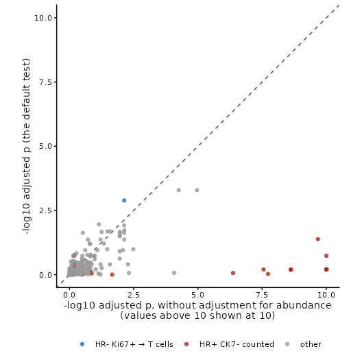

Introduction to spicyR
Ellis Patrick
School of Mathematics and Statistics, and Westmead Institute for Medical Research, University of Sydney, AustraliaSadiq Dohadwalla
School of Mathematics and Statistics, University of Sydney, AustraliaElijah Willie
School of Mathematics and Statistics, University of Sydney, AustraliaNicolas Canete
Westmead Institute for Medical Research, University of Sydney, Australia2 October 2026
Source:vignettes/spicyR.Rmd
spicyR.RmdAbstract
Do T cells gather around tumour cells more in ER-positive breast cancers than in ER-negative ones? Do patients whose tumour cells are surrounded by immune cells relapse later? spicyR answers questions like these for every pair of cell types in an imaging study. This vignette works through a study of 456 breast tumours: testing every pair, looking closely at one, finding the images behind the result, and checking that the test behaves when there is nothing to find.
Introduction
A pair is written from → to. For each
from cell, spicyR counts the to cells within a
radius, and compares that count with what we would expect if the
from cells were a random choice among the cells of the same
image that are not to cells. The difference is the
excess: the number of extra to cells
around each from cell, beyond chance. Because the
comparison uses only the cells that are actually there, empty regions
such as holes or air spaces, and uneven cell density, do not by
themselves create a signal (artefacts that affect one cell type more
than others are not removed). spicyR then compares the excess between
groups of patients, treating patients, not images or cells, as the units
of the test.
Pairs are directional. T cells → tumour cells asks how many extra tumour cells sit around each T cell, which is a different question from tumour cells → T cells.
spicyR needs the type and position of every cell, as from imaging mass cytometry, CODEX, MIBI, Xenium, CosMx or MERSCOPE; it is not designed for spot-based data such as Visium.
Other Bioconductor packages also study how cell types are arranged. imcRtools tests interactions between cell types within each image by permutation, spatialFDA compares spatial summary functions between samples with functional models, and panoramic compares a co-localisation statistic across samples. spicyR is built for the comparison between groups of patients: it measures co-localisation against random labelling of the cells actually present, adjusts by default for how common each cell type is, treats patients as the units, and uses a test designed to keep false positives at the nominal rate with modest numbers of patients. It also relates co-localisation to survival. It works alongside other SydneyBioX packages: per-image statistics from Statial can be compared between groups with spicyR’s image-level test, and lisaClust finds spatial regions.

For each proliferating tumour cell (red), spicyR counts the T cells (blue) within 25 µm and compares the count with chance. Each patient gets an excess, and the excess is compared between ER-negative and ER-positive tumours.
Installation
spicyR 2.0, described here, is in the development version of Bioconductor and will be in its next release. Install it with BiocManager, using Bioconductor devel, or from GitHub:
if (!requireNamespace("BiocManager", quietly = TRUE)) install.packages("BiocManager")
BiocManager::install("spicyR", version = "devel")
# or, from GitHub
BiocManager::install("SydneyBioX/spicyR")The data
We use imaging mass cytometry of breast tumours from the METABRIC
cohort (Ali et al. 2020). Each of the 456
patients with known oestrogen receptor (ER) status contributed one
tumour core, and the authors assigned each cell to one of 22 types.
Their labels name tumour cells by marker: HR is hormone receptor, CK
cytokeratin, and Ki67+ marks proliferating cells, so
HR- Ki67+ are proliferating hormone-receptor-negative
tumour cells. The data are a SpatialExperiment in the
SpatialDatasets package, with coordinates in micrometres.
spe <- spe_Ali_2020()
spe <- spe[, spe$ER.Status %in% c("neg", "pos")]
spe$ER <- factor(ifelse(spe$ER.Status == "pos", "ER+", "ER-"), levels = c("ER-", "ER+"))
table(unique(as.data.frame(SummarizedExperiment::colData(spe))[, c("metabricId", "ER")])$ER)
#>
#> ER- ER+
#> 83 373
sort(table(spe$description), decreasing = TRUE)
#>
#> HR+ CK7- Myofibroblasts Fibroblasts
#> 114828 57295 49043
#> HR- CK7- HR- CK7+ HRlow CKlow
#> 34951 29432 22824
#> T cells HR+ CK7- Ki67+ Fibroblasts CD68+
#> 19218 17203 13716
#> HR- Ki67+ HR+ CK7- Slug+ Macrophages Vim+ Slug-
#> 13062 7417 6721
#> Hypoxia Myoepithelial HER2+
#> 5639 4637 4434
#> Macrophages Vim+ Slug+ Macrophages Vim+ CD45low Endothelial
#> 3657 3600 3480
#> B cells Basal CKlow Vascular SMA+
#> 3232 3226 2908
#> HR- CKlow CK5+
#> 2106
cells <- data.frame(SummarizedExperiment::colData(spe), SpatialExperiment::spatialCoords(spe))
size <- table(cells$file_id) # show the largest core of each group
twoCores <- sapply(c("ER-", "ER+"), function(g) { k <- unique(cells$file_id[cells$ER == g]); k[which.max(size[k])] })
oneEach <- cells[cells$file_id %in% twoCores, ]
oneEach$core <- paste0(oneEach$file_id, " (", oneEach$ER, ")")
ggplot(oneEach, aes(Location_Center_X, Location_Center_Y, colour = description)) +
geom_point(size = 0.5) +
facet_wrap(~ core) +
coord_equal() +
labs(colour = NULL) +
theme_void() +
theme(legend.text = element_text(size = 7)) +
guides(colour = guide_legend(override.aes = list(size = 2)))
Testing every pair of cell types
spicy() needs the column of the condition, the column of
the patient (subject) and a radius. It accepts a
SpatialExperiment, a SingleCellExperiment or a
data.frame with one row per cell. By default it looks for
columns called imageID and cellType; here we
name the dataset’s own columns. The coordinates of a
SpatialExperiment are taken from
spatialCoords().
Choosing the radius. Choose it before looking at the results, from the scale at which you expect cells to interact: 10 to 25 µm for contact, 50 to 100 µm for a shared neighbourhood. Here we use 25 µm, about two to three cell diameters. If you are unsure, give several radii (see Which radius?).
res <- spicy(spe, condition = "ER", subject = "metabricId", r = 25,
imageID = "file_id", cellType = "description")
res
#> spicyR (cell-level test): 484 pairs, ER+ vs ER-, r = 25
#> Units: 456 patients with 456 images
#> Adjusted for: abundance (unadjusted test in the unadjusted_* columns)
#> BH-adjusted p < 0.05: 19 pairs (34 without adjustment)
#> See topPairs() and $cellResults.All 484 ordered pairs of cell types are tested, in about ten seconds
on one core; run time and memory grow roughly in proportion to the
number of cells and to the radius. By default each comparison is
adjusted for how common the to type is in each image, for
reasons we come to in Why adjust for
abundance?. topPairs() lists the most significant.
intercept is the average excess in ER− patients, and
coefficient is the difference in average excess between ER+
and ER− patients (ER+ minus ER−), in extra to cells per
from cell. P-values are adjusted across all pairs by the
Benjamini–Hochberg method.
topPairs(res, n = 8)
#> intercept coefficient p.value adj.pvalue
#> HR+ CK7- Ki67+__HR- CK7+ 0.91473529 -0.57943094 2.071318e-06 0.0005130581
#> HR- CK7+__HR+ CK7- Ki67+ 0.24376555 -0.18071947 2.120075e-06 0.0005130581
#> HR- Ki67+__T cells 0.01352875 0.21944204 8.011807e-06 0.0012925716
#> HR- CK7+__HRlow CKlow -0.05475078 0.03836229 9.104840e-05 0.0110168560
#> HER2+__HR- CK7- 0.30230224 -0.18000011 1.242547e-04 0.0120278570
#> HR- Ki67+__Fibroblasts CD68+ 0.02082939 0.09210954 2.342215e-04 0.0188938708
#> HR- Ki67+__Fibroblasts 0.15401401 0.21468734 3.015880e-04 0.0207038782
#> HR- CK7+__Myofibroblasts -0.35601117 0.16487292 3.422129e-04 0.0207038782
#> from to
#> HR+ CK7- Ki67+__HR- CK7+ HR+ CK7- Ki67+ HR- CK7+
#> HR- CK7+__HR+ CK7- Ki67+ HR- CK7+ HR+ CK7- Ki67+
#> HR- Ki67+__T cells HR- Ki67+ T cells
#> HR- CK7+__HRlow CKlow HR- CK7+ HRlow CKlow
#> HER2+__HR- CK7- HER2+ HR- CK7-
#> HR- Ki67+__Fibroblasts CD68+ HR- Ki67+ Fibroblasts CD68+
#> HR- Ki67+__Fibroblasts HR- Ki67+ Fibroblasts
#> HR- CK7+__Myofibroblasts HR- CK7+ MyofibroblastsThe full results are in res$cellResults, with one row
per pair:
| Column | Meaning |
|---|---|
excess_ref, excess_comp
|
average excess in the reference group (ER−) and the comparison group (ER+) |
excess_difference, se,
df
|
their difference, its standard error and degrees of freedom |
p_value, p_adj
|
p-value, and Benjamini–Hochberg adjusted p-value across all pairs |
tau2 |
how much the excess varies between patients within a group |
adjusted_for, abundance_effect
|
what the test was adjusted for, and the effect of abundance |
unadjusted_difference, unadjusted_p_value,
unadjusted_p_adj
|
the same test without the adjustment |
With more than two groups there is one row per pair and group, each
compared with the reference group, in a column level.
Seeing every pair at once
signifPlot() shows the whole study. Read rows as
from and columns as to. Each circle is a pair:
the left half is coloured by the excess in ER− tumours and the right
half by the excess in ER+ tumours (red: more to cells than
chance, blue: fewer), the size reflects the p-value, and a black ring
marks a BH-adjusted p-value below 0.05.
signifPlot(res, fdr = TRUE, breaks = c(-2, 2, 0.5))
Looking at one pair
We focus on an immune pair: T cells around proliferating hormone-receptor-negative tumour cells.
res$cellResults["HR- Ki67+__T cells", c("excess_ref", "excess_comp", "excess_difference", "p_value", "p_adj")]
#> excess_ref excess_comp excess_difference p_value
#> HR- Ki67+__T cells 0.01352875 0.2329708 0.219442 8.011807e-06
#> p_adj
#> HR- Ki67+__T cells 0.001292572In ER− tumours these tumour cells have no more T cells nearby than chance would give. In ER+ tumours they have about 0.23 extra T cells each, roughly one extra T cell for every four tumour cells.
spicyBoxPlot() shows the excess in each image (here one
image per patient), with a point per image behind each box. Points are
sized by how much the image contributes to the test.
spicyBoxPlot(res, from = "HR- Ki67+", to = "T cells") +
coord_cartesian(ylim = c(-2, 4))
With interactive = TRUE the plot is a plotly widget:
hover over a point to see which image it is. (It is shown on the package
website; it is left out of the vignette installed with the package
to keep it small.)
spicyBoxPlot(res, from = "HR- Ki67+", to = "T cells", interactive = TRUE)This is an association in one cohort; it does not show that the tumour cells attract T cells.
bind() returns the per-image values as a table, for your
own plots or models. Images without any HR- Ki67+ cells
carry no information about the pair (NA).
head(bind(res, pairName = "HR- Ki67+__T cells"))
#> imageID condition subject HR- Ki67+__T cells
#> 1 MB0000_1_527 ER+ MB-0000 NA
#> 2 MB0002_1_345 ER+ MB-0002 -0.01081081
#> 3 MB0005_1_211 ER+ MB-0005 -0.01289134
#> 4 MB0010_1_420 ER+ MB-0010 0.24657169
#> 5 MB0013_1_371 ER+ MB-0013 NA
#> 6 MB0014_1_326 ER+ MB-0014 0.29756739Looking at the images
plotImage() shows one image: the density of all cells in
blue, the from cells in gold and the to cells
in dark red. With r, it draws the circle around each
from cell inside which to cells are counted.
We look at three images found with the interactive box plot.
pair <- "HR- Ki67+__T cells"
examples <- c("MB0150_1_155", "MB0132_1_533", "MB0244_1_519")
i <- match(examples, res$imageID)
data.frame(image = examples, ER = res$condition[i], excess = res$pairwiseAssoc[[pair]][i],
weight = res$imageWeights[[pair]][i])
#> image ER excess weight
#> 1 MB0150_1_155 ER+ 1.4550137 3.744636e-03
#> 2 MB0132_1_533 ER- -0.2220841 1.113268e-02
#> 3 MB0244_1_519 ER+ 8.2712418 3.523647e-05
for (im in examples)
print(plotImage(spe, im, from = "HR- Ki67+", to = "T cells", imageID = "file_id", cellType = "description",
r = 25) + labs(x = NULL, y = NULL, color = NULL))


In the ER+ image on the left, the T cells run along the band of tumour cells at the bottom: 1.5 extra T cells per tumour cell. In the ER− image in the middle, the T cells are concentrated top left, apart from most of the tumour cells, and each tumour cell has slightly fewer T cells nearby than chance (−0.22). The ER+ image on the right has the largest excess of all, 8.3, but it comes from just two tumour cells that happen to sit in a cluster of T cells.
Point size matters. The right-hand image is the
highest point in the box plot, but its weight is close to zero: an
excess estimated from two cells says little. Weights also level off.
Once an image has a few dozen from cells, more cells add
little, because patients differ from one another more than repeated
counts within a patient do. The weights are in
res$imageWeights.
Why adjust for abundance?
A cell type that is simply more common will be found more often
around any other cell, even if cells are arranged no differently. Here
the HR+ CK7- tumour cells are much more common in ER+
tumours. Without adjustment, almost every pair with
HR+ CK7- as the to type looks strongly
different between ER+ and ER− patients.
By default, spicyR adjusts each comparison for the log of the
to type’s share of all cells in each image. The excess is
then compared between groups at the same abundance, and a difference in
arrangement is not confused with a difference in composition. The
unadjusted test is kept in the unadjusted_* columns.
tab <- res$cellResults[order(res$cellResults$unadjusted_p_value), ]
head(tab[, c("from", "to", "unadjusted_difference", "unadjusted_p_adj", "excess_difference", "p_adj")], 8)
#> from to unadjusted_difference
#> HR+ CK7- Ki67+__HR+ CK7- HR+ CK7- Ki67+ HR+ CK7- 1.9930606
#> Fibroblasts__HR+ CK7- Fibroblasts HR+ CK7- -0.5111635
#> HR- CK7+__HR+ CK7- HR- CK7+ HR+ CK7- 0.9996637
#> Myofibroblasts__HR+ CK7- Myofibroblasts HR+ CK7- -0.3747870
#> HR+ CK7-__HR+ CK7- HR+ CK7- HR+ CK7- 1.3933788
#> Fibroblasts CD68+__HR+ CK7- Fibroblasts CD68+ HR+ CK7- -0.2034117
#> HR- CK7-__HR+ CK7- HR- CK7- HR+ CK7- 0.6466170
#> HR+ CK7- Slug+__HR+ CK7- HR+ CK7- Slug+ HR+ CK7- 1.2171623
#> unadjusted_p_adj excess_difference p_adj
#> HR+ CK7- Ki67+__HR+ CK7- 5.511528e-23 0.23693038 0.63209244
#> Fibroblasts__HR+ CK7- 4.294326e-21 0.05765227 0.61194500
#> HR- CK7+__HR+ CK7- 6.298646e-16 0.27181769 0.18464649
#> Myofibroblasts__HR+ CK7- 3.590827e-12 0.06602786 0.63209244
#> HR+ CK7-__HR+ CK7- 2.118001e-10 0.72822922 0.04147583
#> Fibroblasts CD68+__HR+ CK7- 2.372546e-09 0.03308684 0.62050477
#> HR- CK7-__HR+ CK7- 2.416549e-09 0.13284958 0.65174253
#> HR+ CK7- Slug+__HR+ CK7- 1.859721e-08 0.05437067 0.93489013Most pairs with HR+ CK7- as the to type are
no longer significant after the adjustment, so their unadjusted signal
largely reflects abundance. Because abundance differs so much with ER
status, the adjusted test also has less power for these pairs, so a
non-significant adjusted result is not evidence of no effect.
tab$highlight <- ifelse(rownames(tab) == pair, "HR- Ki67+ → T cells",
ifelse(tab$to == "HR+ CK7-", "HR+ CK7- counted", "other"))
ggplot(tab, aes(pmin(-log10(unadjusted_p_adj), 10), pmin(-log10(p_adj), 10), colour = highlight)) +
geom_abline(linetype = 2, colour = "grey30") +
geom_point(alpha = 0.8) +
scale_colour_manual(values = c("HR- Ki67+ → T cells" = "#1f6fb4", "HR+ CK7- counted" = "#b3261e", other = "grey60")) +
coord_equal(xlim = c(0, 10), ylim = c(0, 10)) +
labs(x = "-log10 adjusted p, without adjustment for abundance\n(values above 10 shown at 10)",
y = "-log10 adjusted p (the default test)", colour = NULL) +
theme_classic() +
theme(legend.position = "bottom")
Our pair is more significant after the adjustment, not less
(p_value against unadjusted_p_value). Each
image has its own share of T cells, and tumours with many T cells have
more T cells near any cell. Adjusting for it removes this noise.
abundance_effect is the change in excess for each unit of
log share: positive here, as expected.
res$cellResults[pair, c("excess_difference", "p_value", "abundance_effect", "abundance_p_value",
"unadjusted_difference", "unadjusted_p_value")]
#> excess_difference p_value abundance_effect
#> HR- Ki67+__T cells 0.219442 8.011807e-06 0.08407617
#> abundance_p_value unadjusted_difference unadjusted_p_value
#> HR- Ki67+__T cells 1.751034e-07 0.1518117 0.000282357Use the default (adjusted) result when your question is about
arrangement. If a change in composition is part of the biology you are
asking about, use the unadjusted columns, or
spicy(..., adjustAbundance = FALSE).
Patients with several images
Each METABRIC patient has one core. When patients contribute several
images, give the patient column as subject: the images of
each patient are combined, and patients remain the units of the test.
The package’s diabetesData has 10 images from each of 12
pancreas donors (Damond et
al. 2019); here we compare the 4 donors at the onset of
type 1 diabetes with the 4 non-diabetic donors.
data("diabetesData")
diabetes <- diabetesData[, diabetesData$stage %in% c("Non-diabetic", "Onset")]
diabetes$stage <- droplevels(diabetes$stage)
spicy(diabetes, condition = "stage", subject = "case", r = 50)
#> spicyR (cell-level test): 222 pairs, Onset vs Non-diabetic, r = 50
#> Units: 8 patients with 80 images
#> Adjusted for: abundance (unadjusted test in the unadjusted_* columns)
#> BH-adjusted p < 0.05: 0 pairs (0 without adjustment)
#> See topPairs() and $cellResults.No pair is significant with the 8 donors as the units. Leaving out
subject treats each of the 80 images as a separate
patient:
spicy(diabetes, condition = "stage", r = 50)
#> spicyR (cell-level test): 222 pairs, Onset vs Non-diabetic, r = 50
#> Units: 80 images (no subject given: each image is a patient)
#> Adjusted for: abundance (unadjusted test in the unadjusted_* columns)
#> BH-adjusted p < 0.05: 2 pairs (9 without adjustment)
#> See topPairs() and $cellResults.Treating every image as an independent patient overstates the
evidence: images from one donor are alike, and here it turns up pairs
that the donors do not support. Always give subject when
patients have several images.
Adjusting for clinical covariates
Covariates measured per patient or per image are added with
covariates. Here we also adjust the ER comparison for age
at diagnosis and tumour grade.
spe$Grade <- factor(spe$Grade)
resCov <- spicy(spe, condition = "ER", subject = "metabricId", r = 25,
imageID = "file_id", cellType = "description",
covariates = c("Age.At.Diagnosis", "Grade"))
resCov
#> spicyR (cell-level test): 484 pairs, ER+ vs ER-, r = 25
#> Units: 456 patients with 456 images
#> Adjusted for: abundance, covariates (unadjusted test in the unadjusted_* columns)
#> 3 pairs could not be adjusted and are reported unadjusted (see adjusted_for)
#> BH-adjusted p < 0.05: 4 pairs (34 without adjustment)
#> See topPairs() and $cellResults.The main columns (excess_difference,
p_value, p_adj) are now the ER comparison
adjusted for abundance, age and grade. Each covariate also has its own
effect and p-value. A factor has one per level after the first:
Grade2 and Grade3 compare grades 2 and 3 with
grade 1.
resCov$cellResults[pair, c("excess_difference", "p_value", "Age.At.Diagnosis_effect", "Age.At.Diagnosis_p_value",
"Grade2_effect", "Grade2_p_value", "Grade3_effect", "Grade3_p_value")]
#> excess_difference p_value Age.At.Diagnosis_effect
#> HR- Ki67+__T cells 0.2294387 7.12482e-06 0.001072325
#> Age.At.Diagnosis_p_value Grade2_effect Grade2_p_value
#> HR- Ki67+__T cells 0.3061597 0.07453645 0.1817184
#> Grade3_effect Grade3_p_value
#> HR- Ki67+__T cells 0.08227635 0.1300123The difference between ER+ and ER− patients is much the same after adjusting for age and grade, and neither has a clear effect of its own on this pair. Patients with a missing covariate are left out of the adjusted test.
A pair that cannot be adjusted, for example because its cell types
appear in images of only one grade, is reported unadjusted, and its
adjusted_for column says why. The printed summary above
counts these pairs.
Testing every pair keeps the results the same across analyses. If you
restrict from and to, the numbers for a pair
can shift slightly, because spicyR estimates how much cells of a type
cluster among themselves from all the pairs it tests.
Which radius?
The scale of an interaction is rarely known in advance. Give several
radii and spicyR tests them together, using a max-T test that accounts
for the strong correlation between neighbouring radii
(combine = "cauchy", the Cauchy combination of Liu and Xie (2020), is an alternative).
resR <- spicy(spe, condition = "ER", subject = "metabricId", r = c(10, 25, 50, 75),
imageID = "file_id", cellType = "description")
resR$cellResults[c("HR- Ki67+__T cells", "HR- Ki67+__B cells"), c("r", "excess_difference", "p_value")]
#> r excess_difference p_value
#> HR- Ki67+__T cells 25 0.21944204 2.731342e-05
#> HR- Ki67+__B cells 50 0.08572214 1.069835e-02r is the radius with the strongest evidence, and
p_value the combined p-value over all radii.
The excess grows with the radius simply because larger circles hold more cells, so compare p-values across radii rather than the size of the excess. The excess at the chosen radius is a little optimistic, because that radius was picked for its strength. This combined test is new, and its calibration is still being checked.
profile <- resR$radiusResults[resR$radiusResults$from == "HR- Ki67+" &
resR$radiusResults$to %in% c("T cells", "B cells"), ]
ggplot(profile, aes(r, -log10(p_value), colour = to)) +
geom_line() +
geom_point() +
expand_limits(y = 0) +
labs(x = "radius (µm)", y = "-log10 p at each radius, ER+ vs ER-", colour = "around HR- Ki67+") +
theme_classic()
Is co-localisation associated with survival?
With a Surv column as the condition, spicyR asks whether
a patient’s excess is associated with their outcome. Here we use
relapse-free survival, adjusting for age.
spe$RFS <- Surv(spe$timeRFS, spe$eventRFS)
resS <- spicy(spe, condition = "RFS", subject = "metabricId", r = 25,
imageID = "file_id", cellType = "description", covariates = "Age.At.Diagnosis")
resS
#> spicyR (cell-level test): 484 pairs, association with survival, r = 25
#> Units: 456 patients with 456 images
#> Adjusted for: abundance, covariates (unadjusted test in the unadjusted_* columns)
#> BH-adjusted p < 0.05: 0 pairs (3 without adjustment)
#> See topPairs() and $cellResults.
head(resS$cellResults[order(resS$cellResults$p_value),
c("from", "to", "p_value", "p_adj", "hazard_ratio_sd", "unadjusted_p_value", "unadjusted_p_adj")])
#> from to
#> HR- CK7+__HRlow CKlow HR- CK7+ HRlow CKlow
#> HER2+__Vascular SMA+ HER2+ Vascular SMA+
#> HRlow CKlow__HR- CK7+ HRlow CKlow HR- CK7+
#> Myoepithelial__Basal CKlow Myoepithelial Basal CKlow
#> Myoepithelial__Macrophages Vim+ CD45low Myoepithelial Macrophages Vim+ CD45low
#> HR+ CK7- Ki67+__HR+ CK7- HR+ CK7- Ki67+ HR+ CK7-
#> p_value p_adj hazard_ratio_sd
#> HR- CK7+__HRlow CKlow 0.000294744 0.1426561 0.7096738
#> HER2+__Vascular SMA+ 0.001148443 0.2402531 NA
#> HRlow CKlow__HR- CK7+ 0.001489172 0.2402531 0.7481943
#> Myoepithelial__Basal CKlow 0.007104592 0.7306842 0.7143004
#> Myoepithelial__Macrophages Vim+ CD45low 0.008175431 0.7306842 0.7133472
#> HR+ CK7- Ki67+__HR+ CK7- 0.009058068 0.7306842 0.7927419
#> unadjusted_p_value unadjusted_p_adj
#> HR- CK7+__HRlow CKlow 0.0001923491 0.03544836
#> HER2+__Vascular SMA+ 0.0007754965 0.09383508
#> HRlow CKlow__HR- CK7+ 0.0025619655 0.24799826
#> Myoepithelial__Basal CKlow 0.0082132282 0.39752025
#> Myoepithelial__Macrophages Vim+ CD45low 0.0145471257 0.50291492
#> HR+ CK7- Ki67+__HR+ CK7- 0.0001081977 0.03544836The p-value comes from a score test that relates each patient’s
excess to their outcome. hazard_ratio_sd is the hazard
ratio for a one standard deviation higher excess, from a Cox model;
below one, patients with a higher excess had a lower risk of relapse. It
is missing when the excess barely varies between patients.
No pair is significant after adjusting for multiple testing. Without
the abundance adjustment, three pairs are, all with tumour cell types as
the to type. Tumour composition is itself prognostic, so
those three may reflect composition as much as the arrangement of
cells.
A check you can run
A test should give few significant results when there is nothing to find. Shuffling the ER labels across patients removes any real difference, so about 5% of pairs should then have p < 0.05, and about 1% p < 0.01.
set.seed(2026)
patients <- unique(as.data.frame(SummarizedExperiment::colData(spe))[, c("metabricId", "ER")])
shuffles <- do.call(rbind, lapply(1:5, function(i) {
label <- setNames(sample(patients$ER), patients$metabricId)
spe$shuffled <- label[spe$metabricId]
s <- spicy(spe, condition = "shuffled", subject = "metabricId", r = 25,
imageID = "file_id", cellType = "description")
data.frame(shuffle = i, threshold = c("p < 0.05", "p < 0.01"),
percent = 100 * c(mean(s$cellResults$p_value < 0.05), mean(s$cellResults$p_value < 0.01)))
}))
aggregate(percent ~ threshold, shuffles, mean)
#> threshold percent
#> 1 p < 0.01 1.115702
#> 2 p < 0.05 4.917355
ggplot(shuffles, aes(threshold, percent)) +
geom_jitter(width = 0.1, height = 0, size = 2, alpha = 0.7) +
geom_point(data = data.frame(threshold = c("p < 0.05", "p < 0.01"), percent = c(5, 1)),
shape = 95, size = 14, colour = "#b3261e") +
scale_y_continuous(limits = c(0, 15), labels = function(v) paste0(v, "%")) +
labs(x = NULL, y = "pairs below the threshold", title = "5 shuffles of the ER labels (red: expected)") +
theme_classic()
Pairs share cells, so the percentage moves by a few points from one shuffle to the next.
Run this check on your own data before trusting a discovery. It takes a few minutes and shows whether the test is calibrated for your study design.
How it works
For a pair from → to and an image, let
O be the number of to cells within r of
the from cells. If the from cells were a
random choice among the cells of the image that are not to
cells, keeping every cell where it is, O would have an exact
mean and variance, which spicyR computes without permutations. The
excess of an image is
where
is that expectation under random labelling and n is the number
of from cells.
Images from the same patient are combined, giving more weight to more
informative images (usually those with more from cells).
Each patient has its own true excess, which varies around its group’s
mean by an amount estimated from the data (a frailty, or random-effects,
model, with the between-patient variance estimated as by Paule and Mandel (1982)). The difference between
groups, adjusted for the log share of the to type in each
image and any covariates, is tested with a small-sample cluster-robust
(CR2) variance on Satterthwaite degrees of freedom (Bell and McCaffrey 2002; Pustejovsky and Tipton
2018), with patients as the clusters. This is designed to keep
false positives near the nominal rate even with modest numbers of
patients. When the from cells cluster among themselves, the
within-image variance is inflated to match. A paper describing the
method is in preparation.
Small studies
With fewer than about ten patients per group, expect few significant
pairs, even when an effect is consistent across patients: a calibrated
test cannot be confident with little information. Look at whether the
patients agree in direction with spicyBoxPlot().
variance = "hartung_knapp" (Hartung and Knapp 2001) can give more power in
very small studies. It assumes that patients vary about equally in both
groups and can give too many small p-values for rare cell types, so it
is not the default.
Reporting results
A methods sentence might read: “We used spicyR (version 1.99.1) to
test, for every ordered pair of cell types, whether the number of
to cells within 25 µm of each from cell,
relative to random labelling of the cells in each image, differed
between ER+ and ER− patients, adjusting for the abundance of the
to type in each image, with patients as the units of
analysis. P-values were adjusted across pairs by the Benjamini–Hochberg
method.” Show a per-patient plot (spicyBoxPlot()) and an
image of the pair (plotImage()) alongside the p-value.
citation("spicyR")
#> To cite spicyR in publications please use:
#>
#> Canete N, Iyengar S, Ormerod J, Baharlou H, Harman A, Patrick E
#> (2022). "spicyR: spatial analysis of in situ cytometry data in R."
#> _Bioinformatics_, *38*(11), 3099-3105.
#> doi:10.1093/bioinformatics/btac268
#> <https://doi.org/10.1093/bioinformatics/btac268>.
#>
#> A BibTeX entry for LaTeX users is
#>
#> @Article{,
#> title = {{spicyR: spatial analysis of in situ cytometry data in R}},
#> author = {Nicolas Canete and Sourish Iyengar and John Ormerod and Heeva Baharlou and Andrew Harman and Ellis Patrick},
#> year = {2022},
#> volume = {38},
#> number = {11},
#> pages = {3099--3105},
#> journal = {Bioinformatics},
#> doi = {10.1093/bioinformatics/btac268},
#> }Coming from spicyR 1.x
spicyR 2.0 changes the default test. Before 2.0, spicy()
compared a per-image summary of the L-function between groups with a
weighted mixed model (Canete et al. 2022).
That test is still available, and gives the same results as before, with
method = "image"; it is described in the vignette “The
original image-level test in spicyR”. It is also the method to use with
your own per-image statistics (alternateResult), for
example from the Statial package. topPairs(),
signifPlot(), spicyBoxPlot() and
bind() work with both tests.
resImage <- spicy(spe, condition = "ER", subject = "metabricId", method = "image",
imageID = "file_id", cellType = "description",
from = "HR- Ki67+", to = "T cells")
topPairs(resImage)
#> intercept coefficient p.value adj.pvalue from to
#> HR- Ki67+__T cells 3.390153 -6.671336 0.3577837 0.3577837 HR- Ki67+ T cellsThe image-level test summarises a different statistic, on a different scale, so its coefficient is not comparable with the excess; here it finds no evidence of a difference either way.
Python
The Python package spicyr runs the same cell-level test on AnnData, SpatialData and pandas objects, on the same C++ code, and gives the same results; its tutorial is this vignette in Python. The names follow Python conventions:
| R (spicyR) | Python (spicyr) |
|---|---|
spicy(spe, condition, subject, imageID =, cellType =, from =, to =) |
spicy(adata, condition, subject, image_id=, cell_type=, from_=, to=) |
condition = "RFS" with a Surv(time, event)
column |
survival=("timeRFS", "eventRFS") |
topPairs(res), res$cellResults
|
res.top_pairs(), res.cell_results
|
signifPlot(res),
spicyBoxPlot(res, from, to), bind(res)
|
res.signif_plot(),
res.box_plot(from_, to), res.bind()
|
plotImage(spe, image, from, to),
res$imageWeights
|
spicyr.plot_image(adata, image, from_, to),
res.image_weights
|
The image-level test is available only in R.
Session information
sessionInfo()
#> R version 4.6.1 (2026-06-24)
#> Platform: x86_64-pc-linux-gnu
#> Running under: Ubuntu 24.04.5 LTS
#>
#> Matrix products: default
#> BLAS: /usr/lib/x86_64-linux-gnu/openblas-pthread/libblas.so.3
#> LAPACK: /usr/lib/x86_64-linux-gnu/openblas-pthread/libopenblasp-r0.3.26.so; LAPACK version 3.12.0
#>
#> locale:
#> [1] LC_CTYPE=C.UTF-8 LC_NUMERIC=C LC_TIME=C.UTF-8
#> [4] LC_COLLATE=C.UTF-8 LC_MONETARY=C.UTF-8 LC_MESSAGES=C.UTF-8
#> [7] LC_PAPER=C.UTF-8 LC_NAME=C LC_ADDRESS=C
#> [10] LC_TELEPHONE=C LC_MEASUREMENT=C.UTF-8 LC_IDENTIFICATION=C
#>
#> time zone: UTC
#> tzcode source: system (glibc)
#>
#> attached base packages:
#> [1] stats4 stats graphics grDevices utils datasets methods
#> [8] base
#>
#> other attached packages:
#> [1] survival_3.8-6 ggplot2_4.0.3
#> [3] SpatialDatasets_1.10.0 SpatialExperiment_1.22.0
#> [5] SingleCellExperiment_1.34.0 SummarizedExperiment_1.42.0
#> [7] Biobase_2.72.0 GenomicRanges_1.64.0
#> [9] Seqinfo_1.2.0 IRanges_2.46.0
#> [11] S4Vectors_0.50.3 MatrixGenerics_1.24.0
#> [13] matrixStats_1.5.0 ExperimentHub_3.2.2
#> [15] AnnotationHub_4.2.2 BiocFileCache_3.2.0
#> [17] dbplyr_2.6.0 BiocGenerics_0.58.1
#> [19] generics_0.1.4 spicyR_1.99.1
#> [21] BiocStyle_2.40.0
#>
#> loaded via a namespace (and not attached):
#> [1] tidyselect_1.2.1 viridisLite_0.4.3 dplyr_1.2.1
#> [4] farver_2.1.2 blob_1.3.0 filelock_1.0.3
#> [7] Biostrings_2.80.2 S7_0.2.2 fastmap_1.2.0
#> [10] digest_0.6.39 lifecycle_1.0.5 KEGGREST_1.52.2
#> [13] RSQLite_3.53.3 magrittr_2.0.5 compiler_4.6.1
#> [16] rlang_1.3.0 sass_0.4.10 tools_4.6.1
#> [19] yaml_2.3.12 data.table_1.18.6.1 knitr_1.52
#> [22] labeling_0.4.3 S4Arrays_1.12.1 htmlwidgets_1.6.4
#> [25] bit_4.6.0 curl_8.0.0 DelayedArray_0.38.2
#> [28] RColorBrewer_1.1-3 abind_1.4-8 purrr_1.2.2
#> [31] withr_3.0.3 desc_1.4.3 grid_4.6.1
#> [34] MASS_7.3-65 scales_1.4.0 cli_3.6.6
#> [37] rmarkdown_2.32 crayon_1.5.3 ragg_1.5.2
#> [40] otel_0.2.0 httr_1.4.9 rjson_0.2.23
#> [43] DBI_1.3.0 cachem_1.1.0 splines_4.6.1
#> [46] AnnotationDbi_1.74.0 BiocManager_1.30.27 XVector_0.52.0
#> [49] vctrs_0.7.3 Matrix_1.7-5 jsonlite_2.0.0
#> [52] bookdown_0.48 bit64_4.8.6 crosstalk_1.2.2
#> [55] systemfonts_1.3.2 magick_2.9.1 plotly_4.12.1
#> [58] tidyr_1.3.2 jquerylib_0.1.4 glue_1.8.1
#> [61] pkgdown_2.2.1 gtable_0.3.6 BiocVersion_3.23.1
#> [64] tibble_3.3.1 pillar_1.11.1 rappdirs_0.3.4
#> [67] htmltools_0.5.9 R6_2.6.1 httr2_1.3.0
#> [70] textshaping_1.0.5 evaluate_1.0.5 lattice_0.22-9
#> [73] png_0.1-9 memoise_2.0.1 bslib_0.12.0
#> [76] Rcpp_1.1.2 SparseArray_1.12.3 xfun_0.61
#> [79] fs_2.1.0 pkgconfig_2.0.3